3. 搭建开发环境
本文将展示用于测试 AI 生成的 Python 脚本的开发环境。本节面向 Python 初学者。如果您已经拥有 Python 开发环境，请跳过本节，直接进入下一节。
3.1. Python 3.13.7
本文中的示例已在 Windows 10 系统上，使用 |https://www.python.org/downloads/|（2025 年 8 月）提供的 Python 3.13.7 解释器进行了测试：

在 [1-2] 中，下载 Python 安装程序可执行文件并运行它。
安装 Python 会生成以下文件结构 [1]：

要以交互模式运行 Python，请双击 [2]。以下是一个可运行的 Python 代码示例：

>>> 提示符允许您输入 Python 语句，该语句将立即执行。上面输入的代码含义如下：
行数：
- 1: 变量的初始化。在 Python 中，无需声明变量的类型。变量会自动采用其赋值的类型。该类型可能会随时间变化；
- 2: 显示名称。'name=%s' 是一种显示格式，其中 %s 是表示字符串的形式参数。name 是将代替 %s 显示的实际参数；
- 3: 显示结果；
- 4: 显示变量 name 的类型；
- 5: 此处的变量 name 类型为 class。在 Python 2.7 中，其值应为 <type 'str'>；
现在，让我们打开一个 Windows 命令提示符：
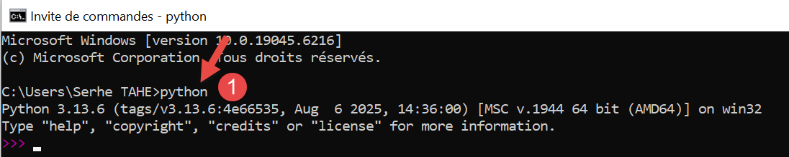
我们在 [1] 中能够输入 [python] 且可执行文件 [python.exe] 被成功找到，这表明它位于 Windows 机器的 PATH 环境变量中。这一点很重要，因为这意味着 Python 开发工具将能够找到 Python 解释器。我们可以按以下方式进行验证：

- 在 [1] 中，我们退出 Python 解释器；
- 在[2]中，显示Windows机器上可执行文件PATH的命令；
- 在[3]中，我们可以看到 Python 3.13 解释器的文件夹是 PATH 环境变量的一部分；
3.2. PyCharm Community 集成开发环境
为了构建和运行本文中的脚本，我们使用了 [PyCharm] Community Edition 编辑器，该编辑器（截至 2025 年 8 月）可通过以下网址获取：|https://www.jetbrains.com/fr-fr/pycharm/download/#section=windows|：

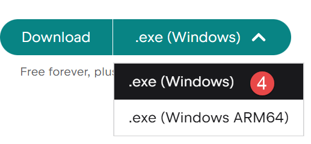
下载 PyCharm Community IDE（Windows 版请点击此处）[1-4] 并进行安装。
现在启动 PyCharm IDE。此时会出现一个配置面板：

- 点击 [1] 在桌面上创建 PyCharm 图标；
- 点击 [2] 将文件系统中的任意文件夹作为 Python 项目打开；
- 在 [3] 中，Python 文件将使用 .py 扩展名；
- 点击 [4] 进入下一步；
下一个窗口再次提供配置选项 [1]：

- 在 [2] 中，选择 [浅色] 主题。用户可选择自己喜欢的主题；
- 在 [3] 中，保持 IDE 语言为英语；
- 在 [4] 中，保留 Windows 快捷键；
让我们创建第一个 Python 项目 [1-2]：

这将打开以下窗口：

- 在 [2] 中，输入要为该项目创建的文件夹名称；
- 在 [3] 中，指定将要保存的代码的不同版本将由 Git 版本控制系统管理。PyCharm 允许您使用其他版本控制系统；
- 在 [4-6] 中，指定您的项目将使用虚拟环境。虚拟环境将在项目根目录下创建一个 [.venv] 文件夹。 项目使用的所有插件（包）都将放入此文件夹。这确保了在搜索插件时项目之间的隔离。项目仅在其自身的虚拟环境 [.venv] 内搜索插件，而不会在其他地方搜索——在其他地方可能会找到名称相同但版本可能不同、且有时彼此部分不兼容的插件；
PyCharm IDE 将显示已创建的项目如下：
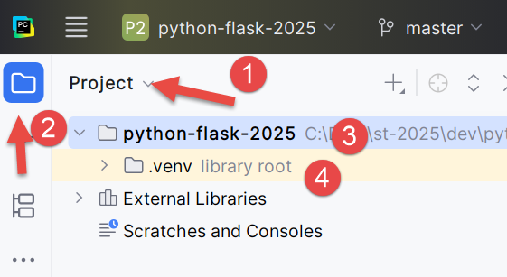
- 在 [1-2] 中，显示项目目录结构；
- [3] 处为项目文件夹；
- 在 [4] 中，是项目的虚拟环境文件夹。我们将在此处安装项目所需的插件；
在开始编码之前，让我们深入探讨一下 IDE 的配置：

- 点击 [1] 以显示主菜单；

- 在 [1-2] 中配置 IDE；

- 在 [1-4] 中，指定要在主工具栏上方显示主菜单。此操作并非必需。我们在此进行此设置是为了便于理解本文档中的屏幕截图。确认更改；
从现在起，主菜单将始终显示 [1]：

让我们继续配置 IDE：

在 PyCharm 窗口的右上角，系统会提供试用 PyCharm Pro 版本的机会。根据您的安装方式，Pro 版本甚至可能已自动安装（2025）。这将增加额外的菜单选项。

如果您安装的是为期一个月的 Pro 试用版，则会在右上角看到消息 [2]。
为确保与后续截图保持一致，我将向您演示如何取消 IDE 的 Pro 试用版（您可随时重新启用）：

- 在 [1-2] 中，管理您的 IDE 订阅；

- 在 [1] 中，禁用 Pro 版本。IDE 将重新启动；
现在，让我们配置将运行我们项目的 Python 解释器。我们记得在之前的步骤中下载了一个：


- 在 [1-3] 中，配置项目的 Python 解释器；
- 在 [4] 中，配置解释器的路径；
- 在 [5] 中，配置与该解释器关联的包（插件）；
在 [4] 中，让我们找出所用解释器的完整路径：

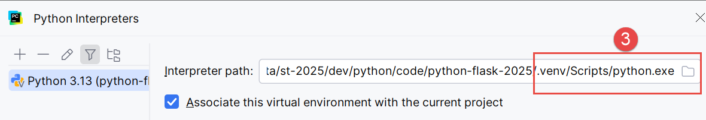
- 在 [3] 中，我们可以看到所使用的 Python 解释器位于项目的虚拟环境文件夹 [.venv] 中；
可以更改 Python 解释器，这可能会改变项目可用的插件：

- 在 [4] 中，添加一个 Python 解释器；

- 在 [5] 中，添加本地解释器。PyCharm 随后会扫描计算机的 PATH 环境变量以查找 [python.exe] 二进制文件；

- 在 [1] 中，指定新解释器应使用项目现有的虚拟环境 [.venv]；
- 在 [2] 中，IDE 会建议使用前一步安装的 Python 应用程序作为解释器；
- 确认此选择；

- 在 [4] 中，选择新的解释器；
- 在 [5] 中，项目将能够访问的包。这是因解释器变更而产生的主要区别。如果您管理多个使用不同包的项目，建议使用每个项目虚拟环境中的包。这样，您就能控制所用插件的版本。出于这个原因，我们将保留虚拟环境中的解释器：
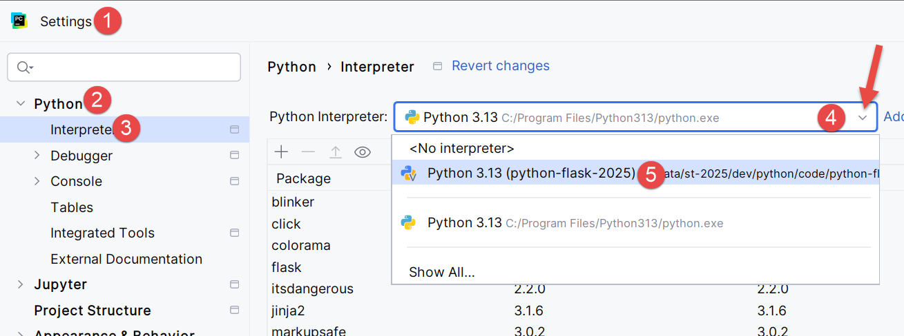

让我们进一步深入探讨配置：
 |  |
- 在 [1-2] 处，进入 IDE 的配置模式；
- 在 [3-4] 处，配置系统选项；
- 在 [5] 中，退出 IDE 时不提示确认；
- 在 [6] 中，退出 IDE 时，若存在由已执行代码启动的运行进程，则将其停止；
- 在 [7] 中，启动 IDE 时，不会自动重新打开上次使用的项目。允许用户自行选择项目；
- 在 [8] 中，当用户同时管理多个项目时，每个项目都有独立的窗口；
- 在 [9] 中，我们已指定了项目的默认文件夹；
现在我们可以开始编写代码了。首先创建一个文件夹，用于存放我们的第一个 Python 脚本：
 |  |
- 右键单击项目，然后按 [1-3] 创建一个文件夹；
- 在 [4] 中输入文件夹名称：该文件夹将创建在项目文件夹内；

接下来，让我们创建一个 Python 脚本：
 | 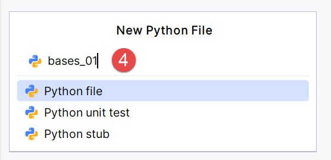 |
右键单击 [bases] 文件夹，然后选择 [1-4]：
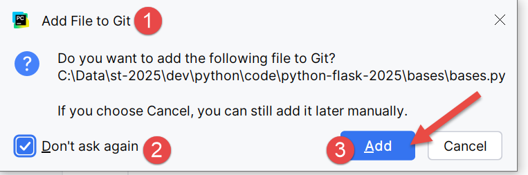 |  |
- 请记住，我们在项目中已包含 Git 版本控制系统。这是在创建项目时勾选 Git 选项时完成的。Git 可以在项目开发的各个阶段对其进行快照。在此处的 [1-3] 中，IDE 询问我们是否要将当前正在创建的 [bases.py] 文件包含在快照中。 我们选择“是”[3]。此外，我们勾选[2]，以便每次创建文件时自动执行此操作。稍后我们将简要回顾 Git；
- 在 [4-5] 中，[bases_01] 脚本已创建完毕，并已准备好进行编辑；
让我们编写第一个脚本：
 |  |
- 第 1 行、第 3 行：注释以 # 符号开头；
- 第 2 行：变量的初始化。Python 不需要声明变量的类型；
- 第 4 行：屏幕输出。此处使用的语法为 [格式 % 数据]，其中：
- 格式：name=%s，其中 %s 表示字符串的占位符。该字符串将出现在表达式的 [data] 部分中；
- data：变量 [name] 的值将替换格式字符串中的 %s 占位符；
- 通过 [1-2]，您可以根据 Python 规范组织的建议重构代码格式。您也可以在键盘上按下 Ctrl-Alt-L；
在截图中，您可以看到部分文本被划线标记。PyCharm 会标记注释和字符串中的拼写错误，并将其称为“拼写错误”。默认情况下，该功能针对英文文本进行配置。若要防止其将法语中的拼写错误标记为错误，请按以下步骤操作：
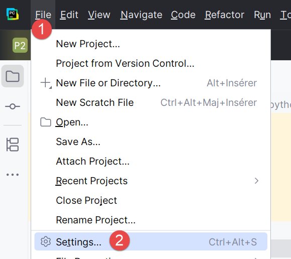 |  |
- 在 [1-2] 中配置 IDE；
- 在 [3-6] 中，禁用编辑器中的 [校对] 选项；
 | 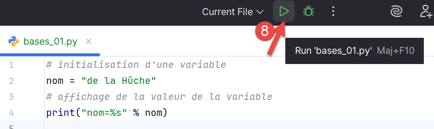 |
在[7]中，拼写错误高亮显示已消失。点击主工具栏上的[8]图标即可运行脚本。结果如下：

- 在 [1-2] 中，已打开一个结果窗口；
- 在[3]中，我们可以看到[bases_01.py]中的代码已在项目的虚拟环境中由Python解释器执行；
- 在 [4] 中，显示了执行结果；
要运行本文中的脚本，请从 URL |使用 AI 工具生成 Python 脚本|（OneDrive 云端）下载代码，然后在 PyCharm 中按以下步骤操作：
 |
- 在 [1-2] 中，关闭您当前正在处理的项目；

- 在 [1] 中，选择 [项目] 选项；
- 在窗口 [2] 中，您将看到最近处理过的项目列表；
- 在 [3] 中，选择“打开现有项目”；
 |
- 在 [1] 中，打开您下载的文件夹；
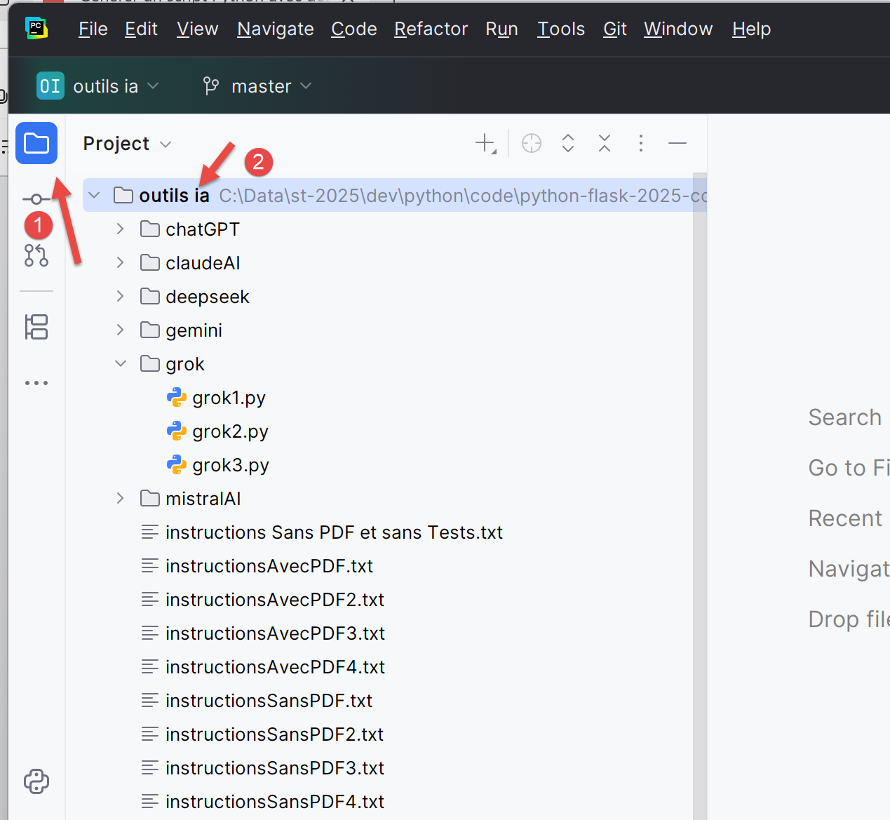 |
- 在 [1-2] 中，选择 PyCharm 项目；
让我们为该项目配置一个虚拟执行环境：
 |
- 在 [1-2] 中，配置新项目；
 |
- 在 [3-4] 中，为该项目配置解释器；
 |
- 在 [5-6] 中，选择一个虚拟执行环境；
 |
- 在 [7] 中，为该项目选定新的 Python 解释器；
完成上述操作后，即可运行该项目的脚本：
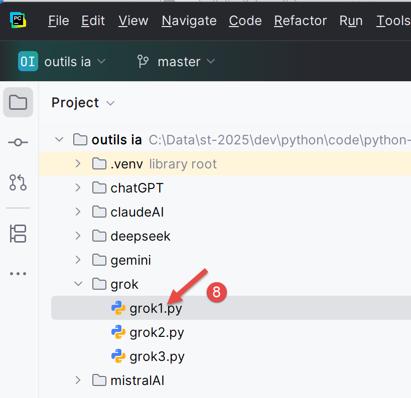 |